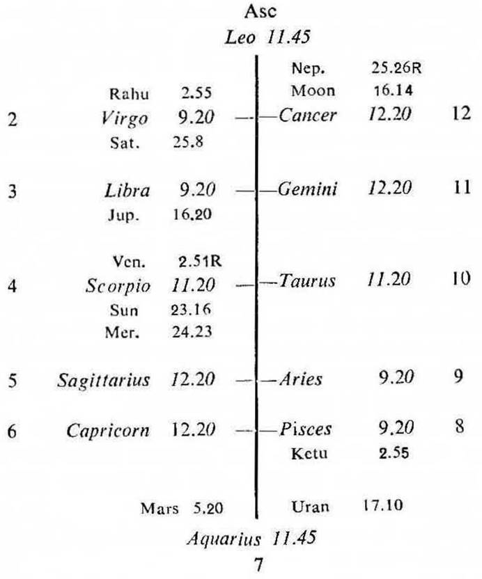
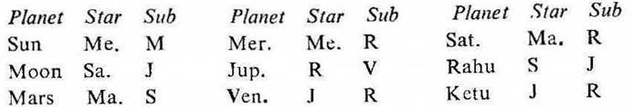

Male. Birth 9-12-1922 Saturday; 0-45 A.M. I.S.T. 22°N 10′; 71°E 42′ Ayanamsa 22° 40′.


If the cuspal sub lord of the 4th be the significator of 4, 11 or 12 and if Mars or Saturn is connected with the house 4, then the native will have his own building during the joint period of the significators of 4, 11 and 12.
4th cusp (a) The sub lord of the 4th cusp is Moon. It owns 12. Its star lord Saturn aspects the 4th and 11th and is aspected by Mars owning 4. Its sub lord Jupiter aspects the 11th and Mars both. So Moon is the significator of 4, 11 and connected with 4, 11, 12 and Mars. Hence the cuspal sub lord of 4 promises the native a building of his own to dwell in.
(b) The cuspal sub lord of 4 Moon owns 12. It is in the star Saturn owning 6, 7 and occupying 2. It is in the sub Jupiter owning 8 and occupying 3. So Moon is the significator of 2 (money), 6 (money by loan or in any manner), 7 (money lender or bank or the transacting person) and connected with 3 (bargain), 8 (sudden gain) and 12 (investment). Hence the sub lord of the 4th cusp promises that the native will have a sudden gain of money. He will bargain with the transacting person in connection with the building (because the star lord Saturn and the sub lord Jupiter both are in aspect with Mars owning 4) and will get money. He will also borrow money from the money lender i.e. Bank and he will spend money for purchasing a building.
2nd cusp. As the cuspal sub lord of 4 shows sudden gain of money, the 2nd cusp which is the principal house for money should be examined. It is jointly ruled by Mercury (sign lord), Sun (star lord) and Venus (sub lord).
Mercury is in its own star owning 2 and 11 in 4. So it is the significator of 2, 4 and 11.
Sun is in the star Mercury owning 2 and 11 in 4 and in the sub Moon owning and occupying 12. So it is the significator of 2, 4 and 11; and connected with 12.
Venus is in the star Jupiter owning 8 and sub Rahu (Rahu in Virgo represents Mercury owning 2, 11 and occupying 4; it is in association with Saturn owning 6, 7 and occupying 2; it is aspected by Mars owning 4 and occupying 6). So Venus is the strong significator of 3, 8, 11 and connected with 2, 4, 6, 7, 11 and Mars. Hence the cuspal sub lord of 2 promises an unexpected gain of money by way of bargain in connection with the building.
(a) In this map the native was born during the period of Saturn with balance of 0Y 7M 12D. The sign lord, star lord and sub lord of the 2nd cusp (i.e. Mercury, Sun and Venus respectively) all these three are the significators of 2, 4 and 11. Among them Sun is the strongest significator of 2, 4, 11 and connected with 12; and its period starts from 21-7-1967 and continues upto 21-7-1973.
(b) So during the period of Sun he will gain money in connection with the building, he will take a loan from the Bank and he will have his own building. This will happen during the joint period of Sun and Mercury: and Sun and Venus.
(c) In fact, during the joint period of Sun, Mercury and Moon in October 1971; and during the period of Sun and Venus in 1972 he got more than one lac of rupees in all from his land lord for vacating the building in which he resided as a tenant.
(d) He could purchase a new building with this money during the same joint period of Sun and Venus in 1972. He occupied the building in October 1972 during the joint period of Sun, Venus and Sun.
(e) He also received a loan from the Bank in connection with this building during the joint period of Sun, Venus and Mercury in June 1973.
Occupation.
In this map the sub lord of the 10th cusp is Mars (printing). Its star lord (Mars) is aspected by Jupiter (publications): and Mars occupies the 6th and aspects the 2nd & the 10th cusps (the houses of occupation). Its sub lord Sun (the chief governor of occupation) is in conj. with Mercury (paper) the owner of 2 in Scorpio (owned by Mars). So the sub lord of the 10th cusp is closely connected with Mars, Mercury, Jupiter and also the houses of occupation. Hence this native is a printer and he runs his own printing press.